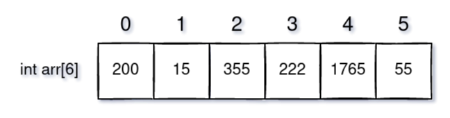
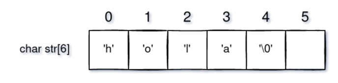

ELO320 - Estructuras de Datos y Algoritmos
Marie González-Inostroza
//tipo_retorno funcion(parametros con o sin nombre);
float potencia(float a, float b);
//....
calculo = x * potencia(y, 2.5);
/*tipo_retorno funcion(parametros con nombre) {
* Implementacion...
}*/
float potencia(float a, float b) {
return pow(a,b);
}
Corresponde al alcance de las variables, es decir, el segmento en el cual existen y pueden ser usadas → entre { y }.
#include<stdio.h>
void saludo(){ // var i sirve sólo dentro de función saludo.
int i = 5;
printf("Hola alumno numero %d", i);
}
int main(){// var a sirve sólo dentro de función main.
int a = 10;
saludo();
printf("%d\n", a);
return 0;
}
Definida dentro de un ámbito determinado, entre llaves { y }.
#include<stdio.h>
int main(){// var a sirve sólo dentro de función main.
int a = 10;
if(a==10){
int b = 1;
printf("%d %d\n", a, b);
}
printf("%d %d\n", a, b); // ¿Qué pasa con la variable b?
return 0;}
Aplica para todo elemento que contenga llaves.
Está definida fuera de cualquier ámbito.
#include<stdio.h>
int a=1; //global
int b=2; //global
int main(){
int a = 10; //local
b++;
printf("%d %d\n", a, b);//¿Qué imprime?
return 0;
}
Puede ser llamada, modificada y utilizada desde cualquier ámbito, siempre y cuando no exista una variable local con el mismo nombre.
Valor o conjunto de instrucciones constantes que se definen a nivel de preprocesamiento. No es una variable y no puede ser modificada.
#include<stdio.h>
#define MACRO 10
int main(){
int a = 5;
printf("%d\n", a*MACRO);
}
Una variable constante es aquella que se declara con el keyword const, e implica que ésta no puede ser modificada. Tiene todo el resto de las propiedades de una variable común.
#include<stdio.h>
int main(){
const int a = 5;
a = 10; //¿Cómo actúa el compilador?
printf("%d\n", a);
}
Completa un programa que representa una calculadora. Este código usa macros, variables globales y locales, funciones y estructuras de control (for, switch).
El código base está en Classroom. Completa las funciones vacías y prueba diferentes escenarios. https://classroom.github.com/a/PWnAx8YH
[]
int arr[6]; //6 enteros creados en arr.
arr[3] = 222; //Al cuarto elemento de arr se le asigna un 222.

Podemos utilizar cualquiera de las estructuras de control iterativas para recorrerlos.
#include
int main(){
int i;
float a[5];
for(i=0;i<5;i++){
float val; //¿Cuántas veces nace y muere val?
scanf("%f", &val);
a[i]=val;
} //¿Cómo reducir este código?
}
char y el carácter '\0'.
// Los strings terminan con '\0' (fin de string)
// '\0' ocupa 1 char en el string.
char str[6] = "hola"; //String de largo máximo 5.
str[3] = 'i'; // ¿Qué hace?
printf("%s\n", str);

#include
int main(){
char nom[10] = "Camilo";
char a[5][20] = {"Juan", "Francisco", "Pedro"};
int b[3][3] = {{1,2,3}, {4,5,6}, {7,8,9}}, i, j;
for(i=0;i<3;i++){
for(j=0;j<3;j++) //¿Qué pasó con las llaves?
printf("%d ", b[i][j]);
printf("\n");
}
}
s.origen al string
destino.
s1 y s2. Retorna 0 si son
iguales.A partir del siguiente código base, realiza una implementación del algoritmo para repartir las cuentas entre amigos.
El código base está en Classroom. Completa las funciones vacías y realiza pruebas con distintos valores. https://classroom.github.com/a/MYR4fiJ2